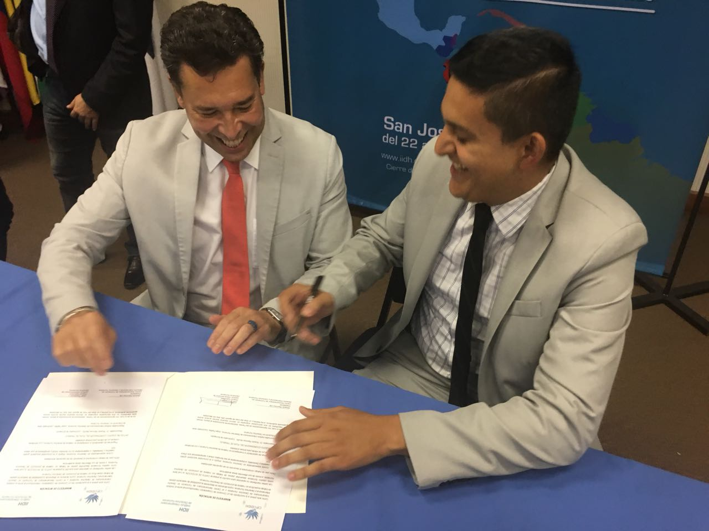
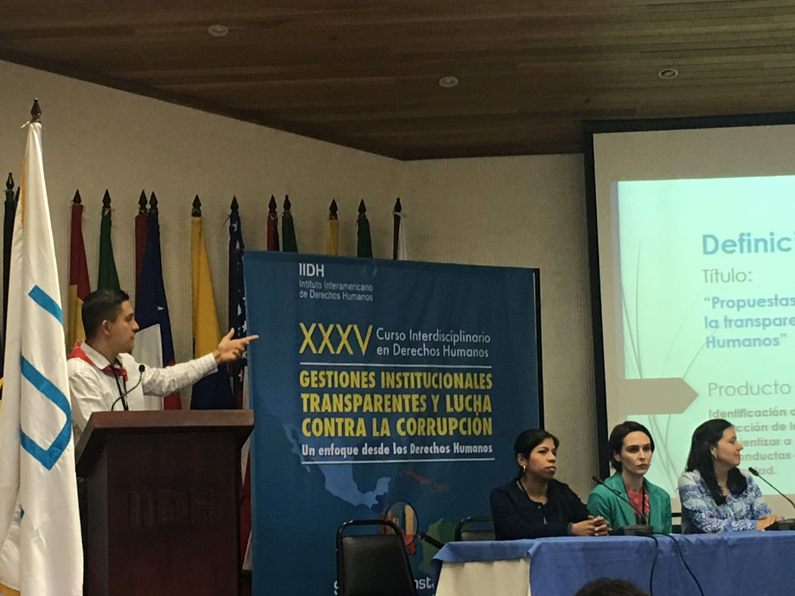

Somos
Una organización de servicios de capacitación y consultoría innovadora en la promoción y desarrollo del Derecho Internacional y los Derechos Humanos, caracterizada por su profesionalismo y solidez académica.

Nuestra Misión
Promover la importancia del Derecho Internacional en la actualidad y el respeto y garantía de los Derechos Humanos como el paradigma esencial de la democracia y el Estado de Derecho.

Filosofía
Con un enfoque multidisciplinario e integral, promover el fortalecimiento de los ordenamientos jurídicos domésticos y facilitar plataformas de diálogo multinivel.